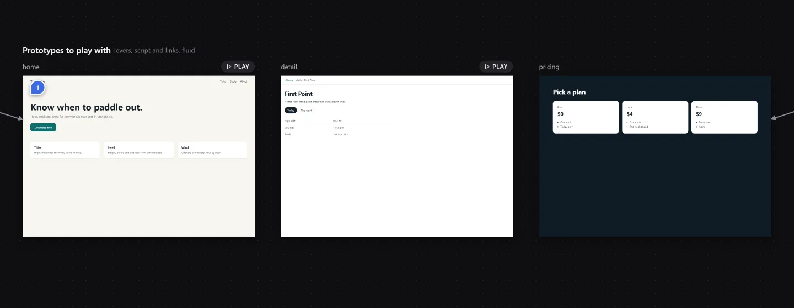
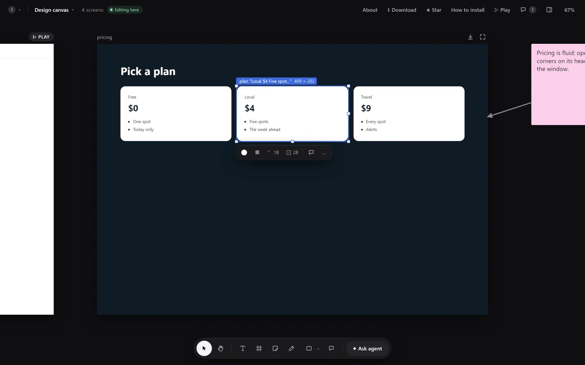

Design canvas
Every HTML prototype in a folder, laid out on one board you can edit.

Prototypes are HTML now
Ask an agent for a design and you get a folder of .html files. Looking at them means a dozen browser tabs, and changing one word means going back to the chat and asking. This puts the whole folder in front of you at once, at real size, and lets you make the small changes yourself.
Click it, change it
Retype a headline, recolour a line, round a corner, drag a card into a new place. The change is written into that prototype's own file, and only the part you touched changes, so the diff stays small and readable.

Room to think around the screens
Sticky notes, shapes, sections and arrows that stay attached when things move. Pin a comment to a button and tick it for the agent: it reads the comment from the same file the next time it runs.

The details are there
One click, one element
A click picks the line you clicked. Alt-click picks every one like it, when you want them all.
Components
Make a card a component, duplicate it, and a style changed on one copy changes on all of them. The words in each stay their own.
Hover and pressed
Switch a button to Hover, see it hovered on the board, set its colour, and choose how fast it fades.
Measure
Hold Alt over another element to see the space between them, in the prototype's own pixels.
Find and replace
Change a word everywhere on the page. Only text changes; tags, scripts and styles are left alone.
Undo anything
Board or prototype, Ctrl+Z takes back whatever you did last, one step at a time.
Groups, align, snap
Group notes, line them up, space them evenly, and watch them catch on each other's edges as you drag.
Phones and tablets
One finger moves the board, two zoom it, and a tap does what a click does.
Nothing leaves your machine
The canvas makes no requests of its own. Served, it answers only this computer.
Get it
It needs Node. There is nothing to install, no build step and no account.
- Put it in your projectAs a skill, in the folder your agent reads skills from:
git clone https://github.com/ryanallen/design-canvas .agents/skills/design-canvas
- Open a folder of prototypesDouble-click Design Canvas.cmd on Windows or Design Canvas.command on a Mac and pick the folder. Or from a terminal:
node .agents/skills/design-canvas/scripts/canvas.mjs serve <folder>
A canvas you build is one .html file. Send it to someone and it opens from their disk; in Chrome or Edge they can edit and comment in it too.